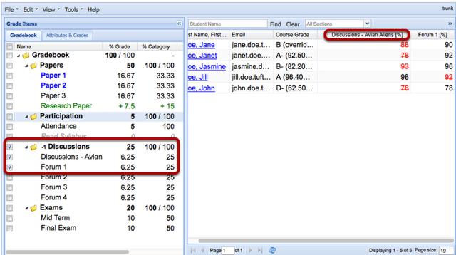

Why are some item scores displayed in red with a strike-through in Gradebook2?
When you view item scores in the spreadsheet frame or Student Summary frame of Gradebook2, you may notice some item scores are displayed in red with a strike-through. You'll see a score displayed this way when an item has been excluded from course grade calculations.
Example of "red strike-through" scores.

An item is excluded from course grade calculations for one of two reasons:
- The item is a "lowest score" item in its category. If you have set up your Gradebook for categories or weighted categories, one of your options when creating a category is "Drop lowest." This option lets you specify that a certain number of lowest-score items for each student will be excluded from course grade calculations. This is the example demonstrated above.
- The item has been "excused" for that student. To excuse an item, you access the Student Summary frame for the student, select the Excuses tab, and click on the checkbox for the item. If you no longer want to excuse the item, simply uncheck it.
When using the Drop lowest option, keep in mind the following:
- When you enter scores in a category set to drop lowest-score items, Gradebook2 does not drop scores until you have at least one more scored item than the number set to be dropped. If a category is set to drop two lowest-score items, for example, you must score three items in order to drop the two items with lowest scores.
- Excusing an item in a category set to drop lowest can affect which items are counted as "lowest score," since the excused item will no longer be included in the calculation. If you excuse an item that is already being counted as a lowest score item, for example, then another item will get counted as "lowest score."